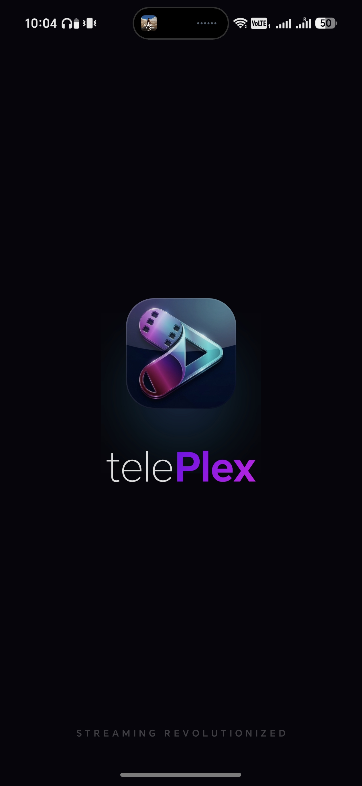
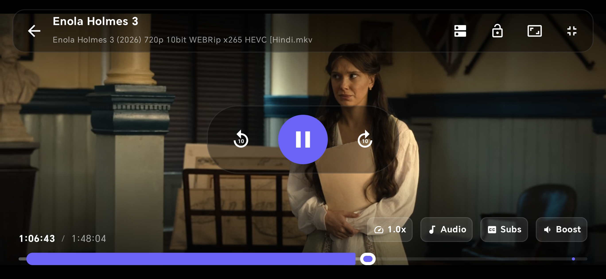
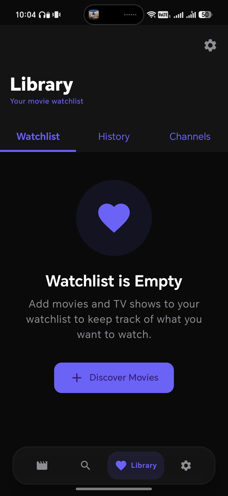
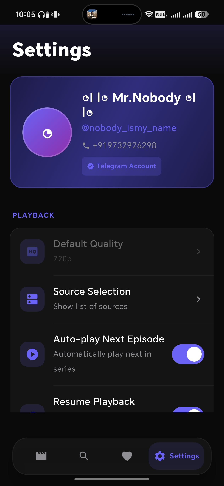
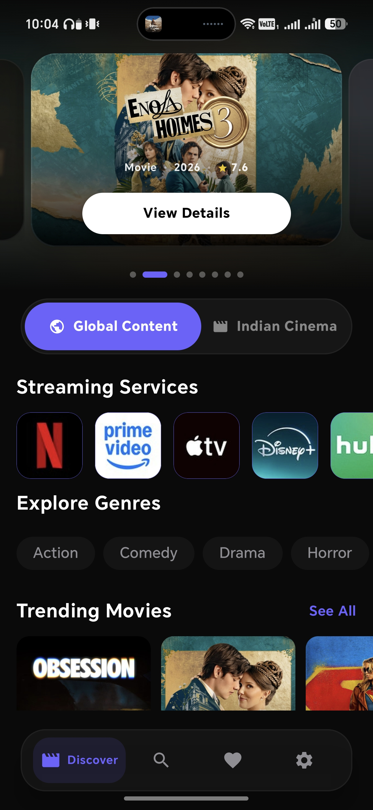
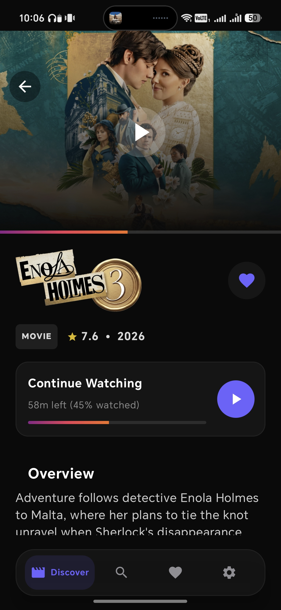
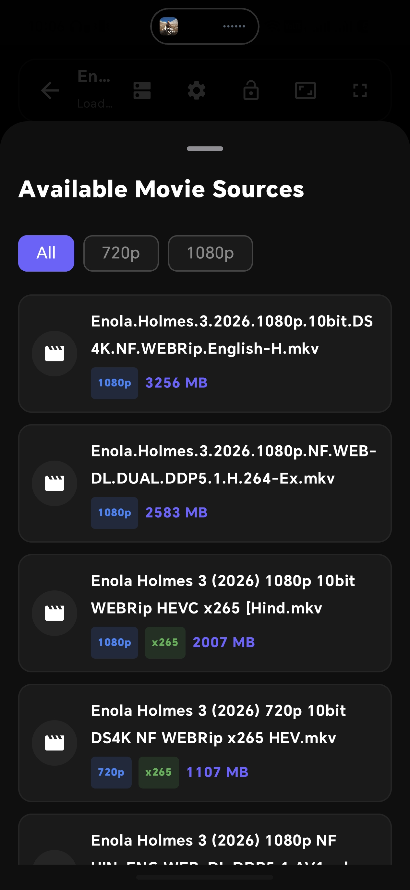

Gallery
Beautifully crafted UI for the modern user.





Why just download when you can stream? telePlex transforms your Telegram channels into a stunning, organized media library. High speed, no clutter.

Browse through Global and Indian cinema with ease. Our interface organizes content by genre, trending status, and streaming platform origin. No more scrolling through endless Telegram chat history.
Powered by advanced fetching technology, telePlex provides full movie details. View IMDb ratings, release years, cast members, and detailed plot overviews before you hit play.
Full actor profiles
Resume where you left


TelePlex intelligently scrapes multiple sources from your joined channels. Whether you want 480p for data saving or 4K for the big screen, the choice is yours.
Beautifully crafted UI for the modern user.




Download telePlex today and see the difference.
Supports Android 8.0 and above